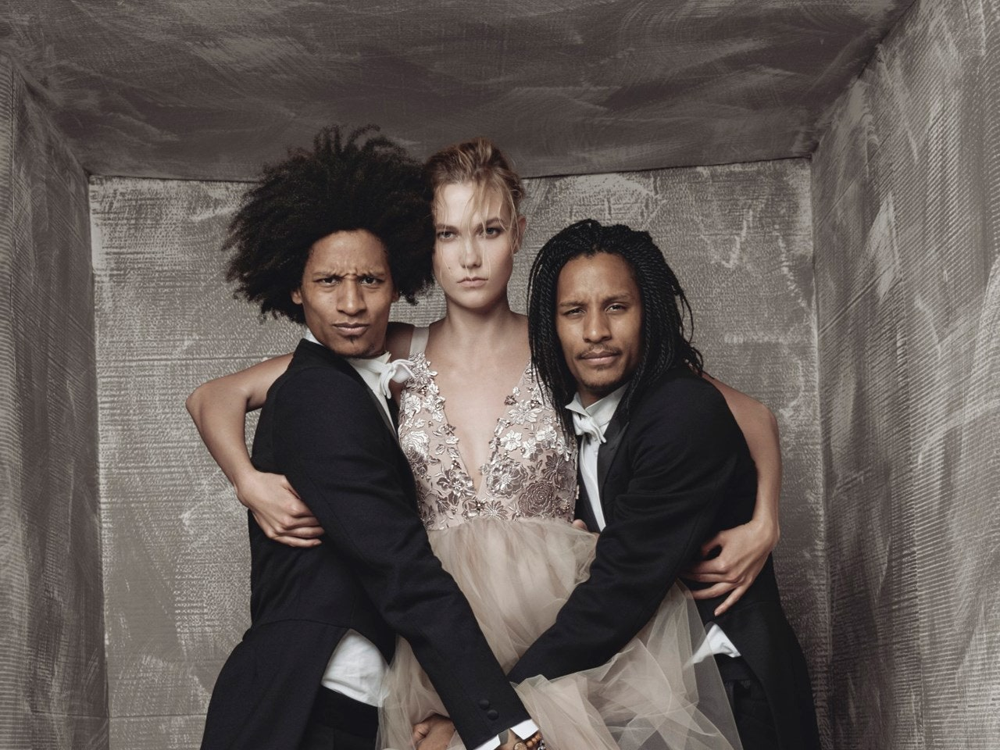

Laurent and Larry Nicolas Bourgeois (born December 6, 1988), professionally known as
Les Twins, are French dancers, choreographers, producers, models, designers, and creative directors of their
brand "Eleven Paris". Often referred to by their respective nicknames, "Lil Beast" and "Ca Blaze", they are
recognized internationally for their
talents in new style hip-hop dancing, and various dancing styles. They are identical twin brothers.
Born and raised in Sarcelles, France, the self-taught dance duo became the darlings of the French audience
in 2008 as finalists on the popular television show Incroyable Talent. They quickly rose to prominence in
the United States after a video of their performance on the San Diego leg of the 2010 World of Dance tour went
viral on YouTube, with over 46 million views as of 1 December 2019. In 2011, they won the hip-hop new style division
of the prestigious international street dance competition Juste Debout. In 2017, they won the American reality competition
series World of Dance, executively produced by Jennifer Lopez.[1] The series featured solo acts and larger groups, competing
for a grand prize of US $1 million.[1]
Les Twins have been featured dancers for various music artists, including Beyoncé, Meghan Trainor, and Missy Elliott.
Standing at 6'4" (193 cm) tall, the brothers have modeled for French haute couture fashion designer Jean Paul Gaultier
and appeared in many high-profile, commercial advertising campaigns, such as YSL, Chanel, Gucci, Prada, Versace, Jay-Z's
Rocawear, Givenchy, and Beats by Dre. They have also walked for many shows before becoming celebrities. They also signed with
The Jordan Family.
either Larry nor Laurent received any formal dance training. Instead, they learned by observing other breakers, lockers,
and poppers and by teaching themselves classical ballet techniques.[4][5][6] At the age of 12, they began performing in
concerts and musicals. According to WAD Magazine, "They were born dancers. They walked at 5 months, seriously moved their
bodies at 18 months old, and at 9 they showed off steps they had invented to youngsters twice their age in their neighborhood."[7
